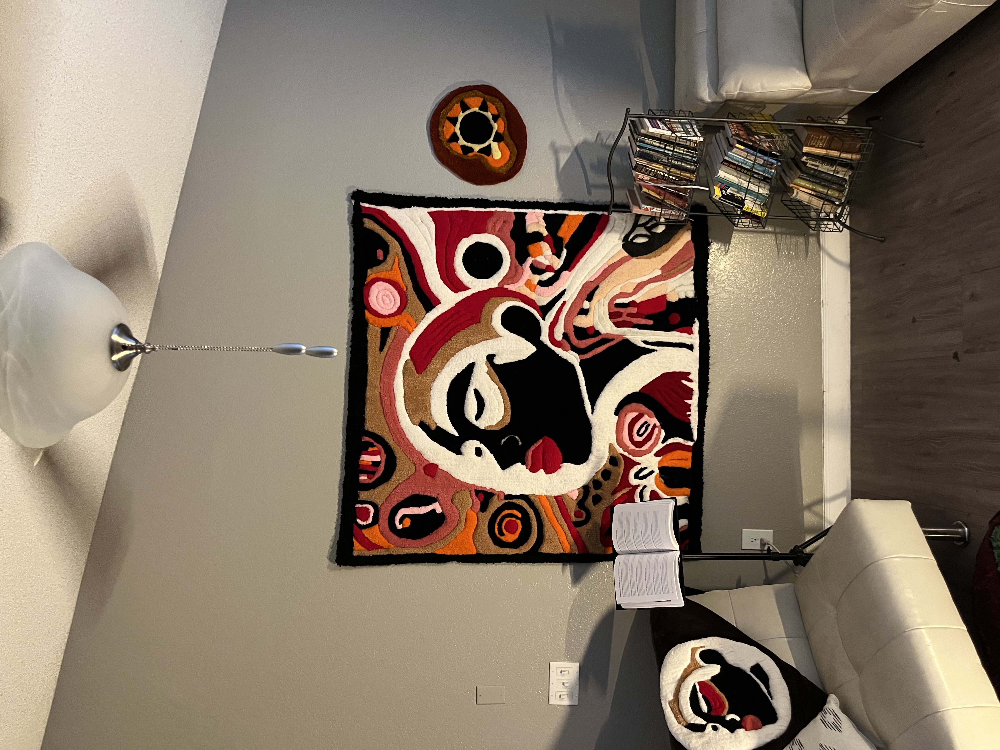

Tufting & Craft

Welcome to the intricate world of tufting, where premium yarns transform into timeless luxury art pieces. At Black Lobby Collective, we've dedicated ourselves to mastering this ancient craft, blending traditional techniques with contemporary artistic vision.
The Foundation: Understanding Tufting
Tufting is more than a craft—it's a form of artistic expression that dates back centuries. Unlike machine-made rugs, hand-tufted pieces carry the unique imprint of the artist, creating one-of-a-kind works that tell stories through texture, color, and design.
Our process begins with careful material selection. We source only the finest natural and synthetic fibers, ensuring each piece meets our exacting standards for quality and durability. The choice of yarn directly impacts the final product's feel, appearance, and longevity.
Material Selection: The First Step
Premium materials are the cornerstone of luxury tufted rugs. We work with:
- Wool: Natural, durable, and luxurious. Perfect for high-traffic areas while maintaining softness.
- Silk: Adds shimmer and elegance, often used as an accent for visual interest.
- Blended Fibers: Combining materials for optimal performance and aesthetic appeal.
The Design Process
Every rug begins with a vision. Our artists collaborate closely with clients to understand their aesthetic preferences, functional needs, and the story they want their piece to tell. This collaborative approach ensures that each creation is not just a rug, but a meaningful addition to your space.
"Tufting is where art meets function, where tradition meets innovation, and where yarn becomes luxury."
From Concept to Canvas
Once the design is finalized, it's transferred to the tufting frame. This canvas becomes the foundation where hours, sometimes weeks, of meticulous work will transform a simple outline into a three-dimensional masterpiece.
The Tufting Technique
The actual tufting process requires precision, patience, and artistic skill. Our craftspeople use specialized tufting guns to insert yarn into the canvas, following the design pattern with exacting accuracy. Each pass of the gun contributes to the rug's texture and depth.
This is where the magic happens—where individual yarn loops combine to create patterns, textures, and visual effects that make each piece unique. The density of tufting, the height of the pile, and the direction of the loops all contribute to the final aesthetic.
Finishing Touches
After tufting is complete, the piece undergoes careful finishing. This includes:
- Securing the backing for durability
- Trimming and sculpting the pile for texture
- Quality inspection for consistency
- Final touches that elevate the piece to art
Creating Your Own Luxury Piece
Whether you're looking for a statement piece for your home, a custom design for a commercial space, or a unique work of art, our team is ready to bring your vision to life. Each commission is an opportunity to create something truly special—a piece that reflects your style and stands as a testament to artisanal excellence.
Ready to explore the possibilities? Contact us to begin your custom tufted rug journey.